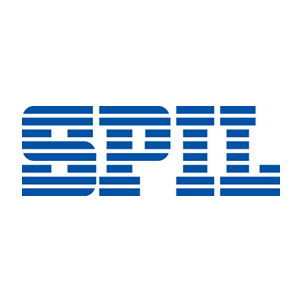

個人簡介和申請動機。
-
申請動機
當時與部門內的實習生使用 Python 執行專案。
首先由我使用原本的做法，說明背景、需求與目的，之後和他使用 Python
製作。這些專案可以在 Python
上使用各類模組執行，無須像之前透過各種程式組合進行資料分析與呈現。Python
提供了相當多的解決方式，讓我印象深刻。
此外，於工作之餘，我發現了「野球革命」這個網站。該網站對於棒球的熱愛，將棒球數據蒐集、分析與圖表呈現，令人驚艷。
這些接觸讓我更想深入鑽研
Python，並期許自己也能像「野球革命」一樣，將熱愛的事物透過資料分析呈現給社會大眾。
-

矽品精密工業股份有限公司 ｜ 工業工程工程師 ｜ 2021.05 ~ 2024.10
3年廠端工業工程經驗，使用工業工程手法於負責站點的資料分析、產能計算與改進、效益評估等。
-
 國立清華大學 ｜ 工業工程與工程管理研究所 ｜ 2018.08 ~ 2020.08
國立清華大學 ｜ 工業工程與工程管理研究所 ｜ 2018.08 ~ 2020.08
就學期間使用 Python 與 R
統計分析與呈現資料，輔助產學合作方的流程改善。
如果參與這個訓練，會怎麼安排學習時間？
目前全職準備轉職，週一至週五
軟體技術日新月異，如何確定選擇投入的領域是正確有回報的？
根據相關調查結果評估
請描述一件產生明顯負面情緒的經歷，如何處理該情緒？
於矽品工作時
關於這份申請網頁，分享一個開發時的技術心得。
CSS 與 JS
如何看待自身工作和整個社會群體的連結關係？
替這社會
其他想要對我們說的事情？
謝謝 Wehelp。
 www.linkedin.com/in/chingming-chiu-706286178
www.linkedin.com/in/chingming-chiu-706286178